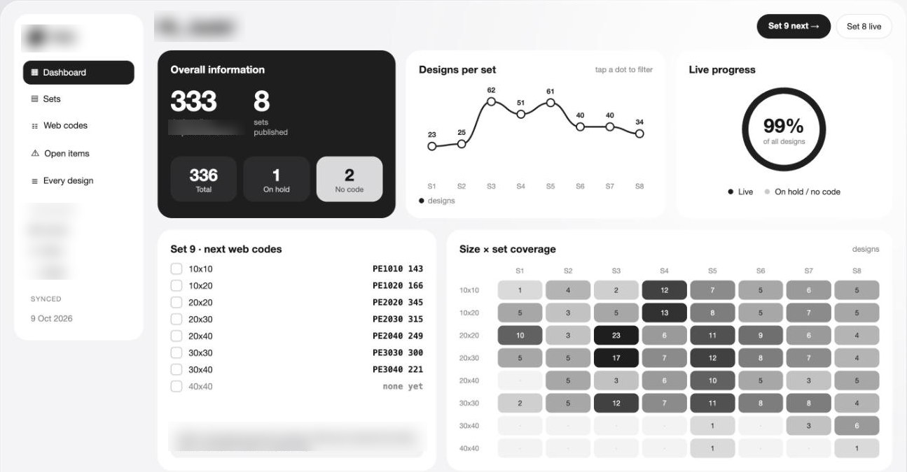
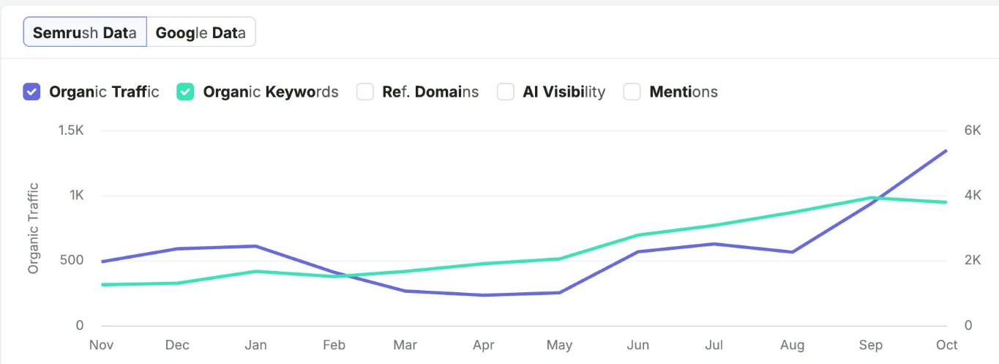
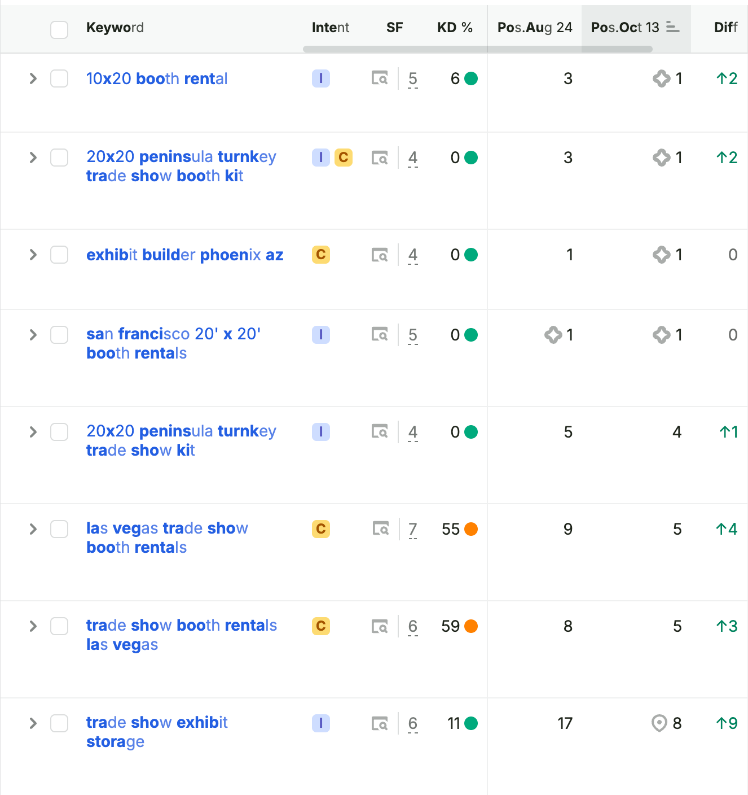

How I used AI to run SEO for a 1,400+ page booth catalogue
A US trade-show booth rental company publishes new booth designs in batches. I turned a slow, error-prone upload process into a repeatable AI-assisted pipeline, and the site grew in both size and search visibility.
Client
US trade-show booth rental company (name withheld)
My role
SEO & content owner
Period
2024 – present
333 / 336designs live across 8 sets (99%)
3,800+organic keywords (Semrush, Oct 2026)
#1on Google US for 4 booth-size keywords
635live product pages audited
The problem
New booth designs arrive in sets from several designers by email. Every design needs 6–8 images in a fixed angle order, a web code, an SEO title, a meta description, attributes and ALT text, and all of it has to match a master sheet.
Done by hand, this was slow and full of small mistakes: images in the wrong order, duplicate titles, missing fields. With dozens of designs per set, those mistakes added up across the whole site.
What I built
A step-by-step pipeline. Collect renders → put them in angle order → compress to WebP (70–100 KB, full resolution) → write the SEO copy → upload → check every live page against the master sheet.
Reusable AI skills. I wrote the process down as a standard operating procedure and as custom Claude skills, so every set follows the same standard, every time.
A 25-rule SEO content guideline. I turned the owner's review comments into written rules, so later sets pass review faster.
A content catalogue for each set. One page with search, size filters, live character counts and copy buttons, so uploading means clicking instead of retyping.
A site-wide audit. I crawled all 635 live product pages and found 9 duplicate titles, 23 duplicate meta descriptions and 31 descriptions over 160 characters to fix.

The dashboard I built to track every set. Client and team names are blurred.
Results
333 of 336 designs live across 8 sets, including the largest set of 61 designs.
3,800+ organic keywords, with organic traffic rising from mid-2026 as the sets went live.
#1 on Google US for four booth-size keywords, such as "10x20 booth rental".
Two competitive Las Vegas rental keywords (keyword difficulty 55–59, up to 590 searches a month) moved from positions 8–9 to #5 in seven weeks.

Organic traffic (purple) and organic keywords (green), Nov 2025 – Oct 2026. Source: Semrush.

Tracked keyword positions, 24 Aug → 13 Oct 2026 (Google US). Source: Semrush.
What I learned
The biggest win wasn't one clever trick. It was making the work repeatable. Once the process lived in written rules and AI skills, quality stopped depending on how tired I was, and each new set was faster than the last.
Not every keyword went up. Some Las Vegas pages lost positions over the same period, and figuring out why is my next piece of work on this project.